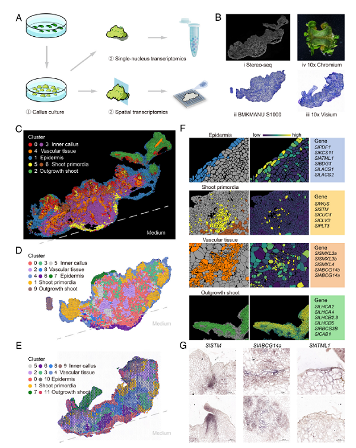
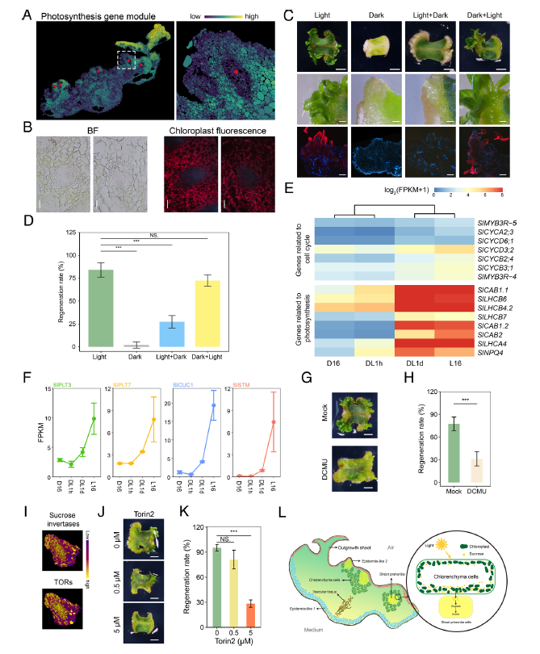

PNAS | 番茄愈伤组织芽再生的空间转录组图谱
再生芽的从头器官发生（De novo shoot organogenesis, DNSO）是植物再生的重要过程，包括愈伤组织的形成和再生芽的产生。拟南芥作为模式植物,其DNSO过程已经得到广泛研究,已经发现了许多关键的转录因子、激素和标记基因在这个过程中的调控作用。除此之外，光照可以促进再生芽形成,而光信号通路的核心组分HY5可以抑制再生芽的形成,这表明光促进再生芽形成可能不是依赖HY5介导的光信号通路,而是通过其他机制实现的。番茄是一种重要的经济作物，它在组培过程中的再生能力强于大豆、小麦和玉米，可以作为研究作物再生的模式物种，但是番茄DNSO的分子机制还并不清楚。单细胞/单细胞核转录组可以解析异质性组织和器官在单细胞水平的表达情况，空间转录组可以在原位空间上解析组织的表达水平。
该研究利用华大Stereo-seq、百迈客BMKMANU S1000和10x Genomics的10x visium三种空间转录组技术以及10X Chromium单细胞核转录组技术首次建立了番茄愈伤组织芽再生的空间转录组图谱，将番茄愈伤组织分为表皮 (Epidermis)、维管组织 (Vascular tissue)、芽原基 (Shoot primordia)、成熟芽 (Outgrowth shoot) 和内部愈伤组织 (Inner callus) 五种细胞类型。进一步研究发现，在表皮、维管组织、和芽原基中又分别存在不同的亚群细胞，这些不同的亚群在功能上也存在差异。

空间转录组相对于单细胞转录组的一个优势是保留了细胞的空间位置信息。作者通过对番茄愈伤组织空间转录组研究发现芽原基被一些富含光合相关基因细胞围绕，并将这些细胞定义为绿色组织细胞 (chlorenchyma cells)。这些细胞可以被光诱导形成，并促进再生芽的形成。黑暗处理和光合抑制剂DCMU均可以抑制芽原基分化和再生。和周围绿色组织细胞相比，芽原基中的蔗糖转化酶基因和SlTORs的表达量更高，并且抑制TOR激酶活性也可以抑制芽再生，表明光照可以通过这些途径促进芽原基分化和芽再生。

这篇文章首次通过多种空间转录组技术构建了番茄愈伤组织再分化阶段的空间转录组图谱，鉴定了多种细胞类型和亚群，表明番茄愈伤组织的细胞多样性。进一步研究发现一个新的细胞类型，并证明光照和TOR信号在芽再生过程中的重要作用。该研究加深了我们对番茄芽再生的细胞和分子机制的认识。
原文链接